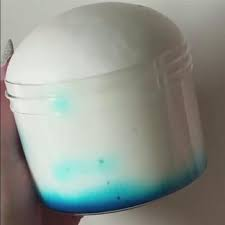
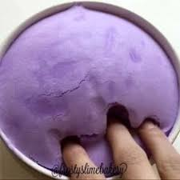
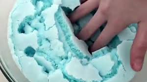

Iceberg slime has a properties of being crispy of the surface area of your slime and the interior of the slime is soft as the fluffy slime.

Iceberg slime is just a fluffy slime with a little differences so the fluffines of this slime can last a day. But you can still play with it but but it will turn into a consistency more like regular slime.
If you want a bigger batch – multiply the recipe below.

In this kind of slime, it's just a fluffy slime with a crispy top layer surface of the slime. With fluffy slime underneath of that crispy top layer slime.
